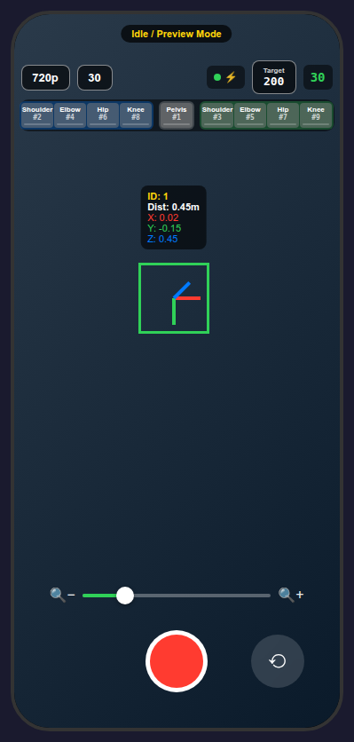
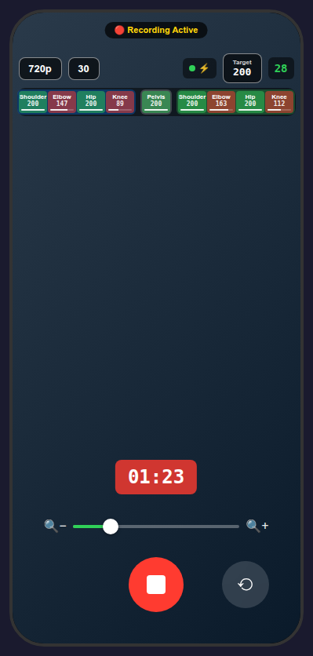
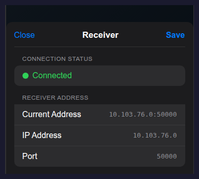

Calibration App Reference#
The calibration app records the short AprilTag video used by the RoSHI pipeline and uploads each session to the local receiver.
For installation and receiver setup, see Calibration App Setup. For the recording workflow, see Calibration Procedure.
Core Functions#
Real-time AprilTag detection (Tag36h11) with 3D pose overlay
Video recording with per-frame UTC timestamps and camera intrinsics
LAN receiver connection with configurable IP and port
Per-tag detection tracking with configurable target counts
Front and back camera support with adjustable resolution, frame rate, and zoom
One-tap upload of the recorded session to the receiver
Capture Settings#
Setting |
Options |
Default |
|---|---|---|
Resolution |
720p / 1080p |
720p |
FPS |
10 / 15 / 20 / 30 |
30 |
Target detections per tag |
50 / 100 / 200 |
100 |
Zoom |
1x-5x |
1x |
Camera |
Front / Back |
Back |
UI Screens#
 Preview mode. The top bar shows resolution, FPS, receiver status, target detections(# of tag detections needed for each IMU), and measured processing FPS.# |
 Recording mode. The timer appears, and tracker chips switch to live detection counts.# |
{kind=link}
{kind=link}
{kind=link}

Receiver settings. Tap the receiver status chip to open the sheet, confirm connection state, and edit the receiver IP address and port manually.#
Behavior Notes#
The tag tracker stays gray in preview, turns red while recording below the target count, and turns green once the target is met.
The live AprilTag overlay shows a bounding box, local 3D axes, and a small readout with tag ID and camera-frame position.
If recording stops before every tag reaches the target count, the session is still saved and uploaded, but the app warns that some tags are incomplete.
Exact tag placement and ID mapping are documented in Components and also the top bar in the app.
Session Output#
Each recording session uploads two files to the receiver:
video_YYYYMMDD_HHMMSS.mp4: H.264-encoded calibration videometadata_YYYYMMDD_HHMMSS.json: per-frame metadata including timestamps, intrinsics, and AprilTag detections
Common Issues#
Receiver not found: confirm the phone and receiver machine are on the same Wi-Fi network and that the manually entered IP and port match the values shown in the receiver terminal.
Connection timeout: check the receiver process, port, and any manual IP or port override inside the app.
Tags not detected: keep the 42 mm tags flat, visible, and well lit, and avoid strong motion blur.
Low detection counts: move more slowly and give the camera a little more time before stopping the recording.